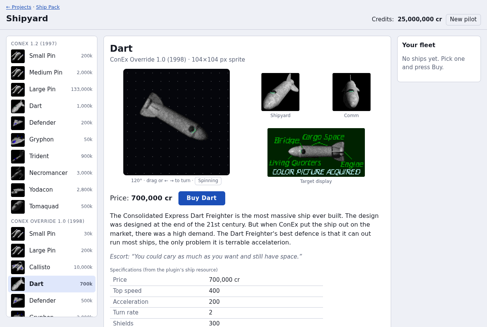
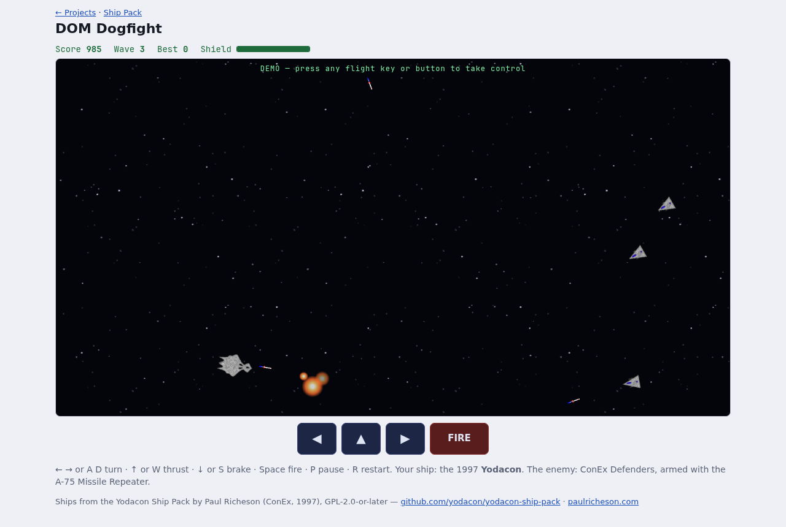
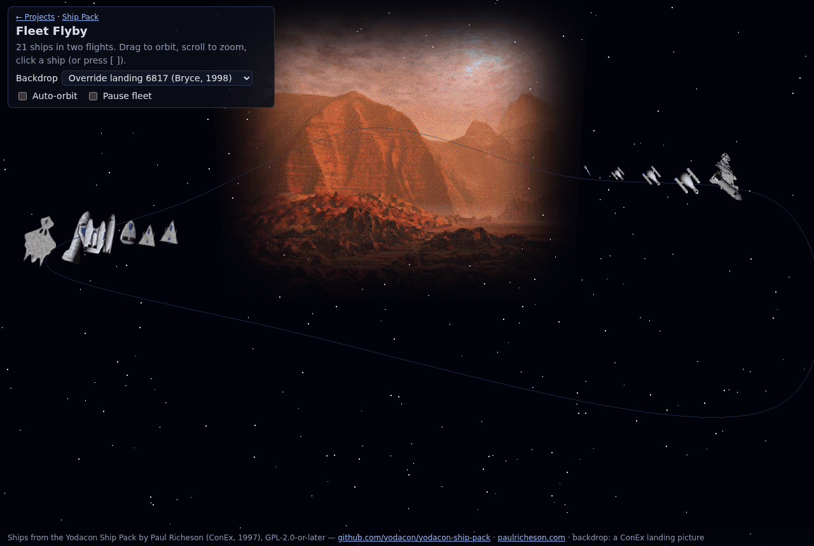
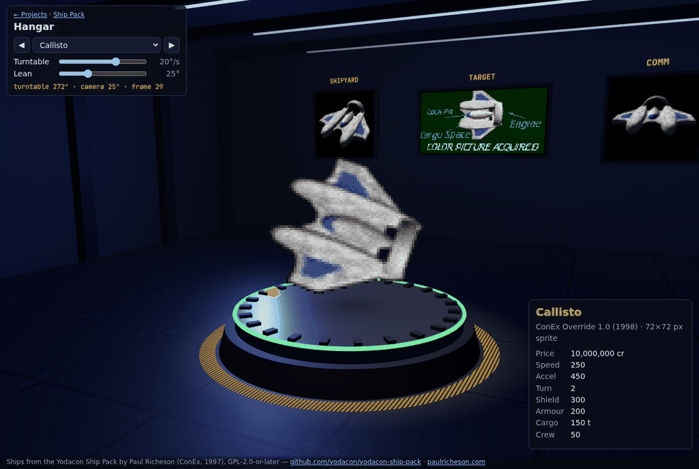

← Ship Pack · Examples · Playground
Sample projects
Small, finished projects to copy and build on. Plain HTML, CSS and JavaScript, no build step. Each folder has a README that explains how it works and how to move it into your own project.
-

Pure DOM
Shipyard
Every ship, its pictures, stats and 1997/98 description; a sprite you drag to turn; buy a fleet with credits.
-

Pure DOM game
DOM Dogfight
Waves of missile-firing Defenders. Every object is a <div>; fixed-timestep loop, touch controls.
-

three.js
Fleet Flyby
Every ship in formation along a spline, as billboards that turn as you orbit. Click one for its pictures.
-

three.js
Hangar
One ship on a turntable whose frame follows the table; its shipyard, target and comm pictures on monitors.
Ships from the Yodacon Ship Pack by Paul Richeson (ConEx, 1997), GPL-2.0-or-later — github.com/yodacon/yodacon-ship-pack · paulricheson.com